Bem vindos ao meu site pessoal
Aqui vocês irão conhecer um pouco sobre meus gostos, habilidades e poderão dar feedbacks sobre o que acharam do site. Espero que gostem! 😁
Vamos nos conhecer melhor?Aqui vocês irão conhecer um pouco sobre meus gostos, habilidades e poderão dar feedbacks sobre o que acharam do site. Espero que gostem! 😁
Vamos nos conhecer melhor?E aí! Sou Mateus Ataide, tenho 20 anos, e estudo no CIN (Centro de informática da UFPE), apaixonado por cachorros e tenho dois pastores alemães incríveis. Também sou viciado em artes marciais, atualmente no kickboxing e de olho no jiu-jitsu para o futuro.No mundo profissional, ja tenho uma experiencia em desenvolvimento web full stack, mas também adoro me aventurar na área de dados, análise e IA. Me identifico como uma pessoa com boa comunicação e tenho facilidade em trabalhar em equipe e construir relações boas. Sempre de olho em aprender algo novo, seja uma língua (espanhol está na lista), conhecer novos países e culturas está com certeza no topo da lista de objetivos de vida. Estou aqui para compartilhar minhas histórias e aprender com as suas 😏.

 



O projeto se baseia em uma aplicação de cursos online, no qual cada curso faz parte de uma categoria e por sua vez tem seus episodios com videos
Descrubra mais sobre mim!A aplicação, baseada em um video do youtube, é uma busca por usuários do github, com a possibilidade de mostrar seus melhores repositorios
Descrubra mais sobre mim!O projeto é um ecommerce padrão, com um modal de carrinho, página sobre o produto e sobre o próprio carrinho, contendo a soma total.
Descrubra mais sobre mim!